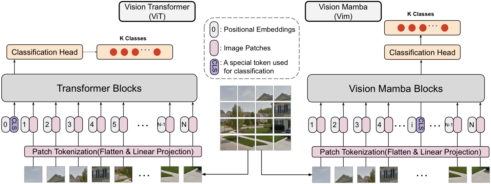
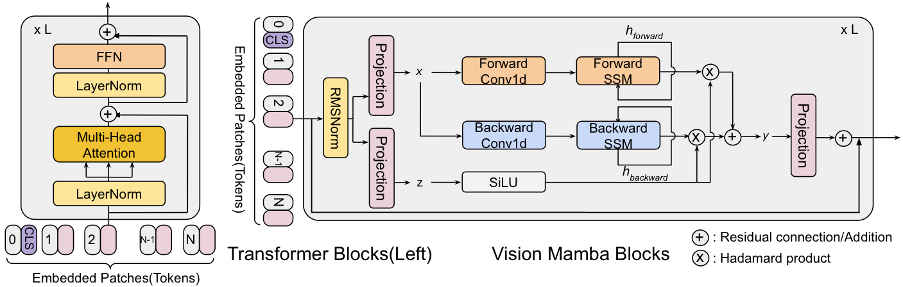
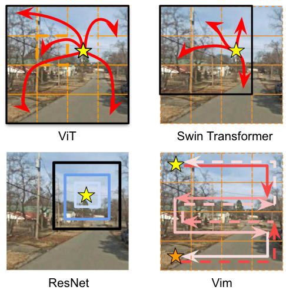

Transformer Architectures
The Vision Transformer (ViT)[1](Figure 1) has become a leading architecture across a wide range of language and computer vision benchmarks since its emergence, following the success of the self-attention mechanism[2]. It has now become a fundamental building block of Computer Vision (CV) models, Vision-Language Models (VLMs)[3], and Large Language Models (LLMs)[4]. ViTs have demonstrated a higher performance ceiling than traditional convolutional neural networks (CNNs)[5], such as ResNets[6], particularly after large-scale pretraining or when provided with sufficient data to acquire the necessary inductive biases.
However, the lack of inductive bias has been a persistent challenge for Transformer-based models—especially in the vision domain—due to the modality shift from language to images while still relying on the same patch tokenization process. In a vanilla ViT[1], the general workflow includes patch tokenization/embedding, stacked attention blocks, and a task-specific head. An image is uniformly divided into fixed-size patches (typically 16×16), which are then projected via a convolutional layer into a sequence of vector representations, or tokens. This token sequence is subsequently processed through a series of attention layers. The self-attention mechanism, shown in Eq. 1, computes relationships among all tokens within the sequence, yielding a globally contextualized representation of the entire image. For an input sequence \(\mathbf{x}\in \mathbb{R}^{N\times D}\), query, key, and value matrices \((\mathbf{q},\mathbf{k},\mathbf{v})\) are obtained via learned linear projections. The attention weights \(A_{ij}\) quantify the similarity between the \(i\)-th query and the \(j\)-th key, and are used to produce a weighted combination of all value vectors. Multi-Head Self-Attention (MSA) extends this operation by performing \(n_h\) independent attention computations (“heads”) in parallel and projecting the concatenated outputs back to the feature dimension, allowing the model to capture diverse relational patterns across tokens. \[\begin{aligned} \left[\mathbf{q},\mathbf{k},\mathbf{v}\right]&=\mathbf{x}\mathbf{W}_{qkv},\mathbf{W}_{qkv}\in \mathbb{R}^{D\times 3D_h},D_h=\frac{D}{n_h},\\ A&=\text{Softmax}\left( \frac{\mathbf{q}\mathbf{k}^T}{\sqrt{D_h}}\right),A \in \mathbb{R}^{N\times N},\\ \text{SA}(\mathbf{x})&=A\mathbf{v}, \\ \text{MSA}(\mathbf{x})&=\left[\text{SA}_1(\mathbf{x});\text{SA}_2(\mathbf{x});...;\text{SA}_{n_h}(\mathbf{x})\right]\mathbf{W}_{msa},\\ \mathbf{W}_{msa}&\in \mathbb{R}^{n_h\cdot D_h\times D}. \end{aligned} \label{eq:multihead self-attention}\] ViT-based architectures have exhibited strong holistic understanding for classification tasks and fine-grained comprehension for dense prediction tasks such as segmentation, across diverse data modalities including natural images[1], videos[7], audios[8], and medical data encompassing both imaging and temporal modalities[9][10]. Although ViTs are generally more computationally expensive than CNNs of comparable size, they are believed to possess greater representational flexibility and scalability across multiple tasks, provided there are sufficient inductive biases, either from the data or from architectural design choices.
To mitigate the lack of inductive bias—particularly translation equivariance and spatial locality [11][12]—which are naturally encoded in CNNs, a large body of work has explored methods for integrating such priors into ViTs without relying solely on large training data. One research direction introduces auxiliary self-supervised objectives to make better use of limited data. Recently, Das et al. [13] conducted a thorough study on the training schemes of Self-Supervised Learning (SSL) tasks for ViTs and found that jointly optimizing ViTs for the primary task (fine-tuning on limited labeled data) and a Self-Supervised Auxiliary Task (SSAT) is more effective than performing SSL and fine-tuning sequentially. Another direction involves injecting multi-scale inductive biases from CNNs into ViTs by integrating convolutional operations at various stages: prior to patch embedding, within attention blocks[14](e.g., replacing linear projections as in [15]), via pooling mechanisms[7], or through hybrid hierarchical designs[16][17]. Subsequent advancements have explored architectures with hierarchical downsampling[18][19][20] or intricate windowing strategies[21][22], addressing the limitations of uniform, single-scale patch grids. Concurrently, significant effort has gone into enhancing the locality of ViTs while improving the computational efficiency. This has led to the development of local attention[23], an early form of windowed attention in which self-attention is confined to spatially local regions, further enabling pixel-level detail modeling [24]. Moreover, by incorporating deformable convolutions or other dynamic mechanisms, models can support deformable or adaptive attention within windows[25], effectively combining the representational flexibility of attention with the efficiency and inductive biases of convolutions.
Efficient Attention
Improving computational efficiency has become one of the central focuses in the evolution of Transformer–based architectures. While Transformers excel at modeling global dependencies through a fully connected self-attention graph, they inherently suffer from the notorious \(O(N^2)\) computational and memory complexity, where N denotes the number of nodes(tokens, or patches) in the fully connected graph. Linear Attention [26] reformulates the self-attention mechanism by expressing the softmax similarity function as a dot product between kernel feature maps, leveraging the associativity of matrix multiplication to achieve a linear computational complexity with respect to sequence length(N). This formulation also reveals the intrinsic connection between Transformers and recurrent neural networks (RNNs), enabling efficient autoregressive modeling with faster training and inference. Window-based attentions are able to alleviate the same issue from a different perspective, by restricting self-attention to local regions. When the window or kernel size is relatively small compared to the input resolution, the computational complexity can be significantly reduced [21], as demonstrated in local attention mechanisms for vision data[24]. Building upon this, Dilated Neighborhood Attention Transformer(DiNAT) [27] extends Neighborhood Attention [24] into a dilated local attention capable of preserving locality, maintaining translational equivariance, and exponentially expanding the receptive field.
Different from window attention, which is a reduced form of patch-to-patch attention, PaCa-ViT[28] learns to cluster patches into a predefined number of \(M\) clusters that serve as keys and values, relaxing the quadratic complexity to linear and demonstrating greater efficiency than PVT models [18] and Swin [21].
To further lower both time and space complexity, researchers have
explored token pruning methods for various downstream tasks such as
segmentation[29]. In language tasks involving
long-context inputs, where the number of tokens can reach millions,
additional studies have leveraged the sparsity of attention weights in
pretrained LLMs. These include heuristic pruning based on attention
patterns [30], low-rank decompositions
[31], learned thresholding
[32], predictive pruning of token indices
[33], and entropy-inspired approaches
[34] that dynamically allocate computation based
on content relevance.

State Space Model
Despite the existing efforts to improve the efficiency of attention computation while maintaining the representational capacity of ViTs, a growing body of research has been exploring alternative architectures as potential successors to modern neural networks. Among these, Mamba [35] revisits state-space models (SSMs) and demonstrates strong performance on 1D long-sequence modeling with linear or near-linear complexity with respect to input length. This has inspired work on constructing general-purpose vision backbones built entirely on SSMs. The key challenges in applying SSMs to vision are: (1) encoding the position-sensitive nature of 2D spatial structures and (2) capturing global visual context, since the original 1D Mamba is unidirectional and lacks inherent positional awareness.
SSMs originate from continuous-time dynamical systems, mapping an input sequence \(u(t)\in \mathbb{R}^L\) to an output \(y(t)\in \mathbb{R}^L\) through a hidden state \(h(t) \in \mathbb{R}^N\), where \(t\) denotes time. A continuous-time linear SSM is expressed as the Ordinary Differential Equation(ODE) in Eq. 2, where \(\mathbf{A}\in \mathbb{R}^{N\times N}\) is the state transition matrix. \(\mathbf{B}\in \mathbb{R}^{N\times 1}\), and \(\mathbf{C}\in \mathbb{R}^{1\times N}\) are the input and output projection matrices, respectively. \[\begin{aligned} h'(t)&=\mathbf{A}h(t)+\mathbf{B}u(t),\\ y(t)&=\mathbf{C}h(t). \end{aligned} \label{eq:mamba ODE}\] To integrate SSMs into deep learning, this continuous model must be discretized. A standard approach is the Zero-Order Hold (ZOH) method, which yields discrete matrices \(\bar{\mathbf{A}}\) and \(\bar{\mathbf{B}}\), parameterized by a times step \(\mathbf{\Delta}\), as shown in Eq. 3. \[\begin{aligned} \bar{\mathbf{A}} &= \exp(\Delta\mathbf{A}),\\ \bar{\mathbf{B}} &= (\Delta\mathbf{A})^{-1}(\exp(\Delta\mathbf{A})-\mathbf{I})\cdot \Delta\mathbf{B}. \end{aligned} \label{eq:mamba discretization}\] This produces the discrete recurrence in Eq. 4: \[\begin{aligned} h_t&=\bar{\mathbf{A}}h_{t-1}+\bar{\mathbf{B}}u_t,\\ y_t&=\mathbf{C}h_t. \end{aligned} \label{eq:mamba discretization-2}\] S4 [36] and Mamba (also known as S6)[35] both adopt this discretized SSM form above. However, Mamba introduces a selective input-dependent parameterization, where \(\mathbf{\Delta}\), \(\mathbf{B}\) and \(\mathbf{C}\) are conditioned on the input, while \(\mathbf{A}\) is learned as a global parameter. In practice, for input \(u \in \mathbb{R}^{b\times L\times N}\), Mamba produces \(\mathbf{\Delta}\in \mathbb{R}^{b\times L\times D}\), \(\mathbf{B,C}\in \mathbb{R}^{b\times L\times N}\), dynamically through the Selective Scan mechanism. Here, \(b\) represents the batch size, \(L\) denotes the sequence length, \(D\) is the feature dimension, and \(N\) can be viewd as the hidden size of SSM, e.g., 16. Then \(\mathbf{\Delta}\) and \(\mathbf{B}\) are used to transform the \(\bar{\mathbf{A}}\) and \(\bar{\mathbf{B}}\).
Zhu et al.[37] adapt S4 and Mamba to vision in Vision Mamba (Vim). Images are partitioned into patches, projected to tokens, and processed as sequences—similar to ViT. To account for the non-causal nature of images, Vim introduces bidirectional selective scanning and position embeddings, enabling global context modeling and spatial awareness. The model overview is shown in Fig. 1. A 2D image \(\mathbf{t} \in \mathbb{R}^{H \times W \times C}\) is first divided into non-overlapping patches of size \(P \times P\), which are then flattened into vectors, forming \(\mathbf{x_p} \in \mathbb{R}^{J \times (P^2C)}\), where \((H, W)\) is the spatial resolution of the input, \(C\) is the number of channels, and \(J\) is the number of patches. Each patch vector is then linearly projected into a \(D\)-dimensional embedding using a learnable projection matrix \(\mathbf{W}\in \mathbb{R}^{(P^2C)\times D}\), and a positional embedding \(\mathbf{E}_{pos}\in \mathbb{R}^{(J+1)\times D}\) is added, as shown in Eq. 5. Following the ViT design, a learnable [CLS] token \(\mathbf{t}{cls}\) is introduced to summarize the global representation of the entire patch sequence. Based on ablation studies, \(\mathbf{t}{cls}\) is inserted in the middle of the sequence rather than at the beginning. As in ViT, the entire sequence is then used as the input of a stack of SSM blocks in Vim encoder, where sequence \(\mathbf{T}_0\) was processed from the forward and backward directions. The output class token \(\mathbf{t}{cls}\) after the final layer of Vim block is used for prediction. \[\begin{aligned} \mathbf{T}_0 &= [\mathbf{t}_{cls};\mathbf{t}_{p}^1\mathbf{W};\mathbf{t}_{p}^2\mathbf{W};...;\mathbf{t}_{p}^J\mathbf{W}]+\mathbf{E}_{pos}]\\[4pt] \end{aligned} \label{eq:positinal embeddings}\] Almost concurrently, Liu et al. [38] integrated visual state-space (VSS) blocks into a hierarchical backbone. In their design, the 2D Selective Scan (SS2D) module performs four-way (cross) scanning and merging to traverse the spatial domain. Specifically, SS2D unfolds feature maps into sequences along four different traversal paths. Each sequence is then processed in parallel by an independent S6 block, and the resulting sequences are reshaped and merged back into a 2D feature map. By leveraging these complementary 1D traversal directions, SS2D enables each pixel to aggregate information from all other spatial positions, effectively establishing a global receptive field in 2D space. Through this mechanism, VMamba [38] adapts S6 to visual data without sacrificing key advantages of self-attention, namely global context modeling and dynamic, content-dependent weighting (in contrast to CNNs that use fixed convolutional kernels) [39]. The comparison of different architectures is shown in Figure 3.
Several subsequent works on visual Mamba architectures primarily differ in their scanning strategies. The raster scan is the most widely adopted in current implementations[40]. More recently, Liu et al. [41] introduced a deformable scanning approach to reduce the loss of structural information brought by fixed scanning paths.
On ImageNet classification, many Visual Mamba architectures outperform the CNN-based MambaOut [42] and hierarchical Transformer baselines such as Swin [21]. Visual Mambas have also demonstrated strong performance across dense prediction tasks—including object detection and semantic segmentation [40]—and have been extended to a wide range of modalities, such as X-ray images [43], digital pathology [44], 3D medical images [45], remote sensing [46], and video understanding [47]. These applications benefit from Mamba’s ability to model long-range spatio-temporal dependencies efficiently.
However, as observed by Xu et al. [40], Visual Mamba models demonstrate competitive performance, yet there are still cases where they do not fully match the most advanced Transformer architectures. Additionally, most current implementations are relatively small in scale, and how to scale Mamba-based models efficiently continues to be an active direction for future research. Similar to ViT, pure Mamba architectures also struggle to capture local fine-grained details, which are crucial for low-level visual tasks. To address this limitation, recent works incorporate convolutions, channel attention mechanisms [48], and multi-scale or hybrid scanning strategies [49]. Together, these developments highlight a broader trend in computer vision research—seeking architectures that balance global context modeling and computational scalability despite the dominance of Transformers.


References
- dosovitskiy2020image （在此补全完整引用信息）
- vaswani2017attention （在此补全完整引用信息）
- zhang2024vision （在此补全完整引用信息）
- zhao2023survey （在此补全完整引用信息）
- krizhevsky2012imagenet （在此补全完整引用信息）
- he2016deep （在此补全完整引用信息）
- fan2021multiscale （在此补全完整引用信息）
- li2025audio （在此补全完整引用信息）
- tang2024hierarchical （在此补全完整引用信息）
- tang2025dynamic （在此补全完整引用信息）
- lee2021vision （在此补全完整引用信息）
- raghu2021vision （在此补全完整引用信息）
- das2024limited （在此补全完整引用信息）
- dai2021coatnet （在此补全完整引用信息）
- wu2021cvt （在此补全完整引用信息）
- tang2024duoformer （在此补全完整引用信息）
- wang2023crossformer++ （在此补全完整引用信息）
- wang2021pyramid （在此补全完整引用信息）
- wang2022pvt （在此补全完整引用信息）
- li2022mvitv2 （在此补全完整引用信息）
- liu2021swin （在此补全完整引用信息）
- dong2022cswin （在此补全完整引用信息）
- parmar2018image （在此补全完整引用信息）
- hassani2023neighborhood （在此补全完整引用信息）
- pan2023slide （在此补全完整引用信息）
- katharopoulos2020transformers （在此补全完整引用信息）
- hassani2022dilated （在此补全完整引用信息）
- grainger2023paca （在此补全完整引用信息）
- tang2023dynamic （在此补全完整引用信息）
- jiang2024minference （在此补全完整引用信息）
- wang2020linformer （在此补全完整引用信息）
- kim2022learned （在此补全完整引用信息）
- akhauri2025tokenbutler （在此补全完整引用信息）
- xiong2024uncomp （在此补全完整引用信息）
- gu2024mamba （在此补全完整引用信息）
- gu2021efficiently （在此补全完整引用信息）
- zhu2024vision （在此补全完整引用信息）
- liu2024vmamba （在此补全完整引用信息）
- han2021connection （在此补全完整引用信息）
- xu2024visual （在此补全完整引用信息）
- liu2025defmamba （在此补全完整引用信息）
- yu2025mambaout （在此补全完整引用信息）
- yang2024cardiovascular （在此补全完整引用信息）
- nasiri2024vim4path （在此补全完整引用信息）
- tsai2024uu （在此补全完整引用信息）
- chen2024rsmamba （在此补全完整引用信息）
- li2024videomamba （在此补全完整引用信息）
- guo2024mambair （在此补全完整引用信息）
- shi2024multi （在此补全完整引用信息）